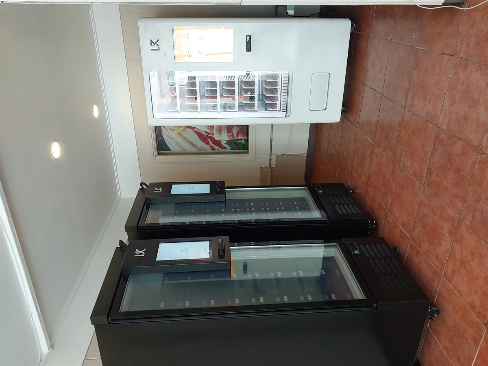

평택에서 무인정육점을 준비하시는 분들 문의가 최근 부쩍 늘었습니다. 고덕신도시와 브레인시티 쪽으로 아파트 입주가 이어지면서, 밤늦게 고기를 사러 갈 곳이 마땅치 않다는 수요가 생긴 겁니다. 이번 구성은 그런 자리에 딱 맞는 형태입니다.
냉동 쇼케이스 두 대에 무인자판기를 한 대 얹었습니다. 쇼케이스에는 냉동육과 밀키트를, 자판기에는 음료와 소스·양념류를 넣는 식입니다. 저희가 현장에서 먼저 보는 건 전원 용량, 바닥 수평, 출입 동선 세 가지입니다. 냉동 장비는 일반 자판기보다 전기를 더 먹기 때문에 콘센트 하나로 되는지부터 확인합니다.
평택 무인정육점에 맞는 구성
냉동 쇼케이스는 유리 상판이라 손님이 위에서 내려다보며 고를 수 있습니다. 소포장 냉동육, 양념육, 밀키트처럼 부피가 작고 단가가 있는 품목에 잘 맞습니다. 무인정육점의 매출은 사실상 이 쇼케이스에서 나옵니다.
자판기는 옆에 붙여 객단가를 올리는 역할입니다. 고기를 사면서 음료나 소스를 같이 집어 가시니까요. 결제는 신용카드와 삼성페이·카카오페이·네이버페이, QR까지 다 받습니다. 현금함이 없어서 동전을 채울 일도, 밤에 현금이 쌓여 불안할 일도 없습니다.
매출과 재고는 사장님 휴대폰 앱에서 봅니다. 어느 칸이 비었는지 원격으로 보이니 매일 매장에 나가지 않으셔도 됩니다.
무인정육점, 좋은 점과 어려운 점
좋은 점부터 말씀드리면, 야간 매출이 통째로 얹힙니다. 일반 정육점이 문을 닫는 밤 9시 이후와 새벽에도 팔립니다. 인건비가 들지 않으니 그 시간 매출은 거의 마진으로 남습니다. 평택처럼 아파트 단지가 계속 들어서는 지역은 야간 수요가 꾸준한 편입니다.
어려운 점도 솔직히 말씀드립니다. 냉동 무인매장은 재고 관리가 전부입니다. 유통기한을 놓치면 손실이 바로 납니다. 그리고 냉동 장비는 전기료가 음료 자판기보다 높습니다. 24시간 돌아가니 한 달 전기료를 미리 계산에 넣으셔야 합니다.
또 하나, 냉동육은 품목 회전이 느리면 티가 납니다. 처음에 종류를 너무 늘리지 마시고, 잘 나가는 대여섯 가지로 좁게 시작해서 회전을 확인한 뒤 넓히는 순서가 안전합니다.
평택 무인매장, 이런 자리가 잘 됩니다
평택에서는 아파트 단지 상가, 원룸촌, 산업단지 배후 주거지에서 무인매장 문의가 많습니다. 삼성전자 평택캠퍼스 주변처럼 교대 근무자가 많은 지역은 밤낮 구분 없이 사람이 움직여서 무인 판매와 궁합이 좋습니다.
고덕신도시와 브레인시티는 입주가 진행 중이라 신규 상가가 계속 나옵니다. 안중읍과 청북읍은 산업단지 배후라 원룸 수요가 있고, 송탄과 서정동 쪽은 기존 상권이 자리 잡혀 있습니다. 자리마다 맞는 구성이 달라서, 사진 한 장만 보내 주셔도 먼저 봐 드립니다.
평택 서비스 지역
비전동 · 합정동 · 동삭동 · 세교동 · 지제동 · 소사벌 · 서정동 · 신장동 · 송탄 · 고덕신도시 · 브레인시티
안중읍 · 포승읍 · 청북읍 · 팽성읍 · 오성면 · 진위면 · 서탄면
인접한 오산 · 안성 · 천안 · 아산 · 화성 향남까지 같은 조건으로 나갑니다.
평택 무인창업, 이렇게 시작하시면 됩니다
설치비는 받지 않습니다. 자리 보는 것부터 장비 구성, 반입, 카드 결제 연동, 재고 운영 방법까지 한 번에 잡아 드립니다. 무인정육점뿐 아니라 무인밀키트, 무인아이스크림, 무인마카롱처럼 냉동·냉장을 쓰는 무인매장은 구성만 바꾸면 같은 방식으로 됩니다.
비용은 구입이 렌탈보다 유리한 편입니다. 렌탈료 대비 구입가가 낮아서 1년 남짓만 운영하셔도 구입 쪽이 넘어섭니다. 정확한 비교는 비용 계산기에서 직접 확인하실 수 있습니다.
평택 무인자판기 설치 상담
자리 사진 한 장만 보내 주셔도 됩니다. 그 자리에서 돌아갈지, 어떤 구성이 맞을지 먼저 봐 드리고 견적을 보내 드립니다.
※ 사진은 픽포스가 시공한 설치 사례이며, 글에 적힌 지역의 현장 사진은 아닙니다. 장비 구성과 품목은 자리와 업종에 따라 달라지며, 정확한 금액은 견적서로 안내드립니다.